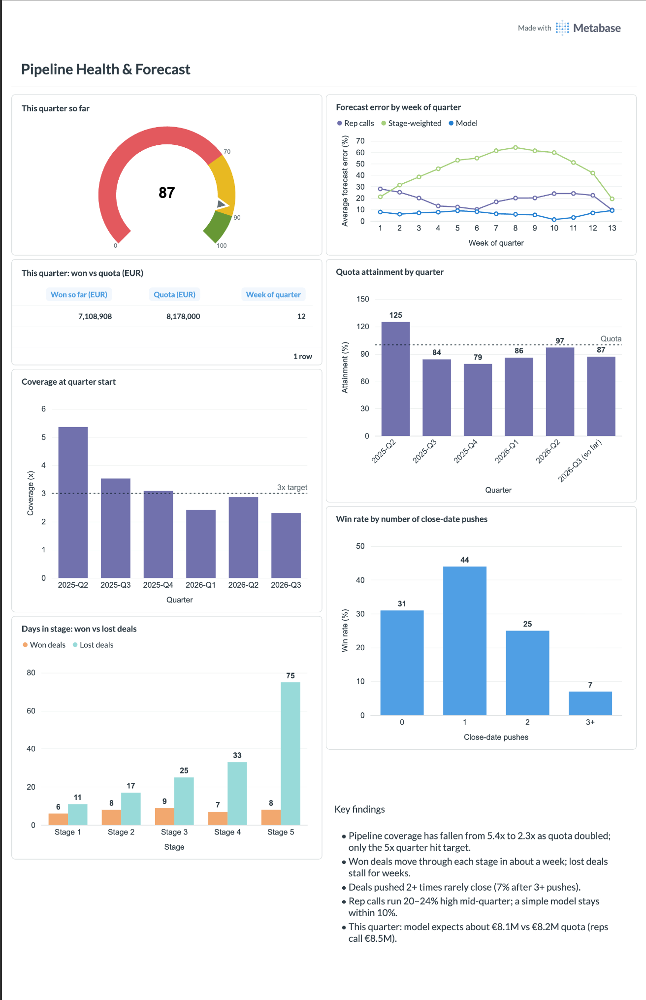
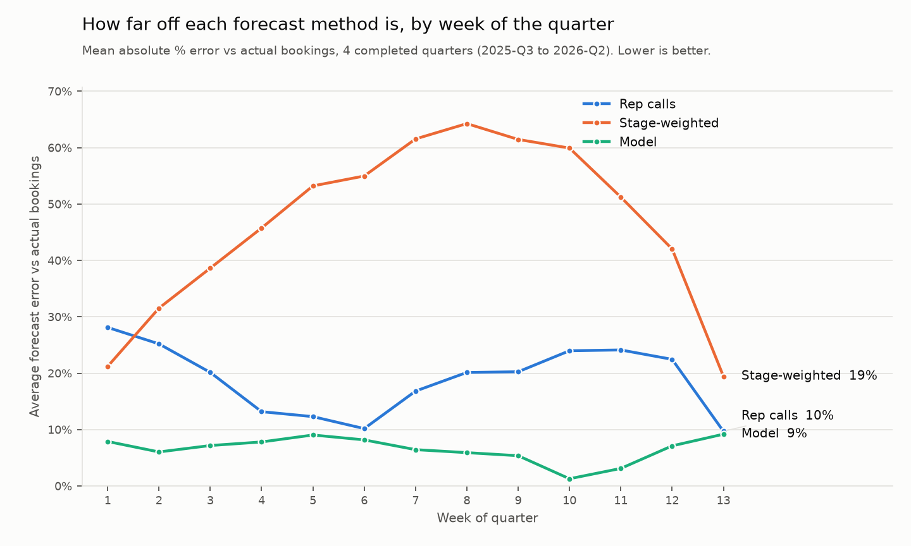

The problem
Every week a sales leader asks the same two questions: will we hit the number, and how much of what the team is committing can we believe?
The answer usually sits in a CRM that only shows today. Salesforce can tell you what the pipeline looks like right now. It cannot easily tell you what it looked like in week 6, which is exactly what you need to judge whether a week 6 forecast was any good.
I wanted to build the analysis a sales analytics function would run on this: where pipeline really stands, where deals stall, and which forecast method deserves trust.
The data
The data is synthetic, modelled on a SaaS company that sells two ways: a self-serve product that users adopt on their own, and an enterprise sales team that closes the larger accounts growing out of it. It covers January 2024 to September 2026.
- 4,200 opportunities with full Salesforce-style field history of stage, amount, close date and forecast category
- 36 sales reps with ramped quarterly quotas and weekly forecast submissions
- 9,140 accounts, 26,000 leads and monthly product usage for 24,000 workspaces
Real CRM data is messy, so I built the mess in on purpose: a Salesforce migration that cut off older history, duplicate account records, mixed currencies, missing deal amounts, deals past their close date and open deals still owned by reps who had left.
The approach
- Load and clean. Raw tables into PostgreSQL, then a staging layer that merges 140 duplicate accounts, standardises labels and converts everything to EUR. The SQL follows the raw, staging and marts layering used in dbt.
- Rebuild the past. A weekly snapshot of every deal as it stood each Monday, rebuilt from field history: 88 weeks and nearly 200,000 rows. This is the foundation for everything else.
- Measure pipeline health. Coverage against quota, stage conversion, time in stage, slippage and win rate by number of close-date pushes.
- Backtest the forecast. For every past week, predict the quarter three ways and compare with what actually closed.
- Make it usable. A Metabase dashboard and a one-page memo written for a VP of Sales.
The dashboard

What the data showed
Not enough pipeline going in
Quota more than doubled, from €3.3M to €8.2M a quarter, while open pipeline stayed at €14–19M. Coverage at the start of the quarter fell from 5.4x to 2.3x. Only the quarter that started above 5x hit target; every quarter since finished between 79% and 97%.
The problem was not closing. It was what the team walked into each quarter with.
Deals that will be lost get stuck
Won deals move through each stage in about a week. Lost deals stay two to nine times longer, up to 75 days in Negotiation against 8 for won deals. Time in the current stage turned out to be the strongest single warning sign.
Close-date pushes are a signal, not noise
| Close-date pushes | Win rate | Reading |
|---|---|---|
| None | 31% | Baseline |
| One | 44% | Normal: dates move when deals are real |
| Two | 25% | Worth a conversation |
| Three or more | 7% | Polite, but not buying |
Which forecast to trust
I compared three ways of predicting a quarter's bookings, each starting from what was already won and adding a view on the rest.
| Method | How it works | Average error |
|---|---|---|
| Rep calls | The sum of each rep's weekly commit | 10–28% |
| Stage-weighted | Fixed probability per stage, the usual CRM default (10% to 80%) | up to 64% |
| Model | Logistic regression on stage, time in stage, pushes, deal age and timing, plus the deals typically created mid-quarter | 1–9% |

The model was trained walk-forward: each quarter was predicted only from the quarters before it, so it never saw the answer. I kept it to a logistic regression on purpose. In a pipeline review, "stuck 40 days in Proposal and pushed twice" is something a rep can act on.
Rep calls were not random either. Some reps consistently called about half of what they closed; others called two to four times as much. When a bias is that stable, leadership can adjust for it.
What I would recommend
- Set a 3x coverage goal for week 1 of every quarter, tracked weekly from mid-way through the quarter before. The fix sits upstream, especially in product-led accounts, which win most often.
- Add two flags to the weekly pipeline review: deals more than three weeks in one stage, and deals pushed twice or more. Either give them a clear next step or take them out of this quarter.
- Show the model forecast next to rep calls, and review each rep's historical accuracy with them. Not to replace their judgement, but to show where it usually runs high or low.
Limitations
The data is synthetic, so the patterns are cleaner than a real CRM would give, and the forecast was tested on four quarters. On real data I would expect the model's lead over rep calls to be smaller, and I would validate it over at least two more quarters before anyone relied on it. With a live stack, the same models would sit in dbt on the warehouse, and product usage would feed both the forecast and lead scoring.